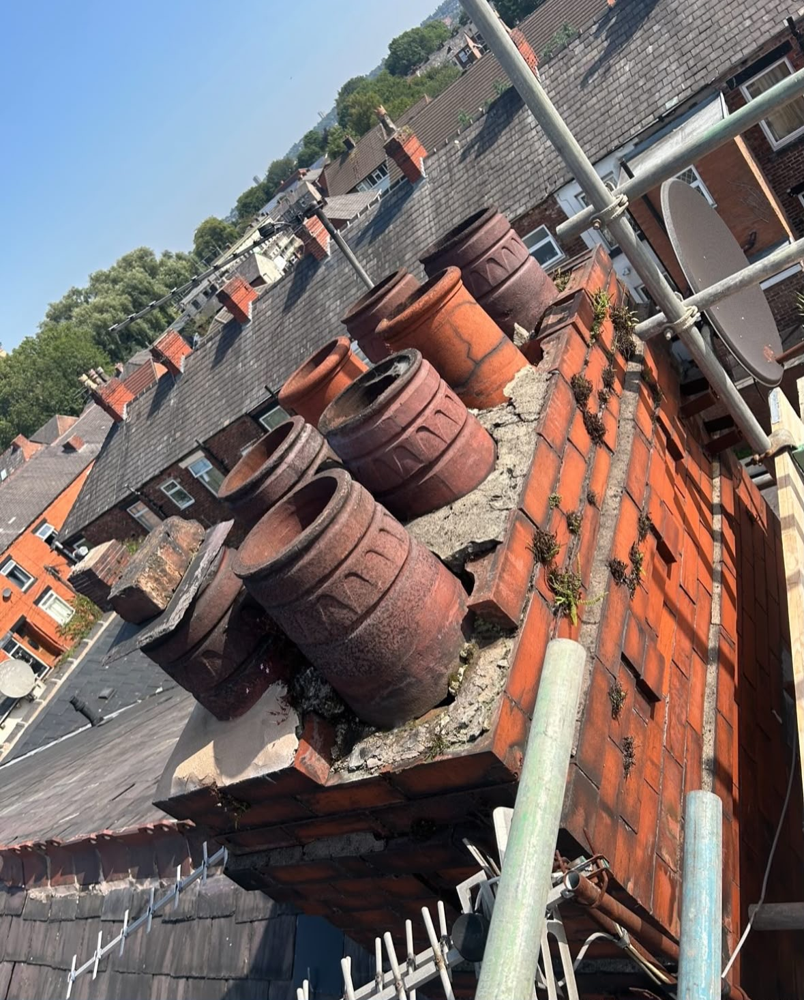
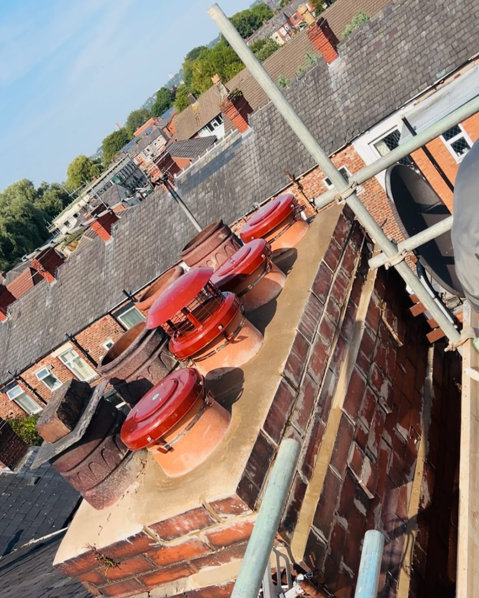
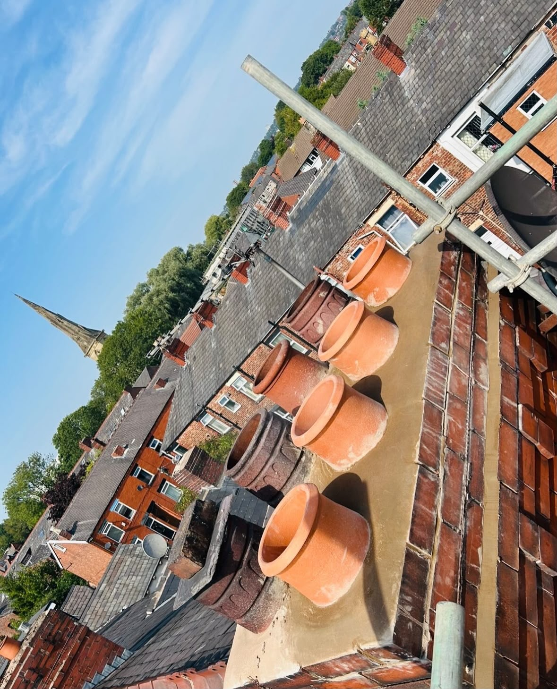

Chimney Repairs · Manchester & Tameside
Quality chimney care and repairs.
Quality chimney care and repairs from an experienced, fully insured team known for reliability and cleanliness.
Our workmanship
Professional repair work from start to finish.
Proudly serving Manchester, Tameside, and the surrounding areas with a decade of unmatched experience, we are fully insured and known for our reliability and cleanliness.
We're committed to delivering thorough and professional chimney and stove services. Trust TB Sweeps for top-quality chimney care and installations in Manchester, Tameside, and beyond.
See our work →Proof of our work
Chimney repairs, completed properly.
A selection of recent repair work from TB Sweeps. Click any image to view it full size.



Real work. Professional finish.
Need a repair?
Talk to TB Sweeps today.
Call for a hassle-free, professional service.